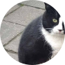
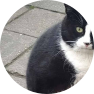

ejemplo@gmail.com
(809) 123-4567

SERVICIOS
Cuidado Preventivo / Vacunas
Los exámenes regulares de bienestar son una de las cosas más importantes que puedes hacer para mantener a tu gato saludable. Recomendamos realizar exámenes de bienestar al menos una vez al año hasta que tu gato cumpla 10 años. Después de esa edad, sugerimos un examen cada seis meses.
Una de las principales razones para llevar a tu gato regularmente es monitorear y tratar condiciones antes de que se vuelvan intratables. Dado que los gatos no pueden decirnos verbalmente cómo se sienten, una enfermedad o afección puede estar presente antes de que notes síntomas. La detección temprana permite gestionar o corregir un problema antes de que se vuelva demasiado grave. Como nuestros gatos envejecen mucho más rápido que nosotros, los exámenes regulares de bienestar son una de las mejores maneras de ayudar a tu gato a vivir una vida larga y saludable.
Durante un examen de bienestar, la Dra. Cacciottoli realizará un examen físico completo y hará preguntas relacionadas con la salud de tu gato. Es útil saber cuánto come, qué tipo de comida recibe y si ha tenido vómitos o heces sueltas o duras. Si encontramos algún problema, discutiremos las pruebas diagnósticas para determinar la causa y recomendar un plan de tratamiento.
También se podrían administrar vacunas si es necesario. Recomendamos traer una muestra de heces al menos una vez al año para detectar parásitos intestinales. Después de los 10 años, sugerimos análisis de sangre al menos una vez al año, que incluyan un conteo completo de células sanguíneas, un análisis de química sanguínea para evaluar la función de los órganos y niveles de tiroides. Todo gato debería ser examinado para FIV/Felv al menos una vez. Esto generalmente se realiza cuando se adquiere un gato nuevo o cuando los gatos tienen acceso al exterior.

© 2024 Gaterinaria. Todos los derechos reservados.


TESTIMONIOS
De nuestros visitantes
“Estas personas son el equipo de veterinarios amantes de los animales más
increíble con el que mi esposa y yo hemos tenido el placer de trabajar. Se
especializan en medicina felina y hacen todo lo posible para asegurarse de
que los miembros peludos de su familia reciban el mejor cuidado posible. Los
hemos utilizado durante años. ¡Reciben mi más alta recomendación!”
- Alguien
“¡El personal aquí es maravilloso! La Dra. Cacciottoli es estupenda, se
preocupa genuinamente por asegurarse de que los pacientes tengan una visita
lo más libre de estrés posible y también dedica una buena cantidad de tiempo
a explicarles a los ansiosos padres de gatitos cómo cuidarlos. Sus precios
son razonables y el personal de apoyo es excelente. ¡Definitivamente
recomiendo Cat Clinic para las necesidades de sus bebés peludos!”
 


- Otra persona